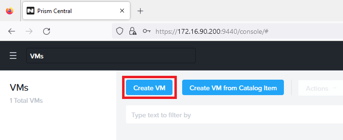

Nutanix
Présentation
Nutanix est une solution informatique révolutionnaire qui simplifie considérablement la gestion de l'infrastructure informatique et des réseaux pour les entreprises. Elle est particulièrement pertinente pour les administrateurs réseau qui cherchent à optimiser la création et la gestion de machines virtuelles (VM) tout en assurant une administration réseau efficace.
Initialisation à Nutanix
- Étape 1 : Accéder à l'URL fournie par votre professeur
(https://172.16.90.200:9440)
- Étape 2 : Authentification sur la plateforme Nutanix
Login : "nom"@lan.sio.lyceefulbert.fr
Mot de passe : "Mdp de lan.sio.lyceefulbert.fr"
- Étape 3 : Accéder au tableau de bord Nutanix

- Étape 4 : Création de votre machine virtuelle (VM)

Création de la machine virtuelle
- Étape 1 : Donner un nom à la VM
Donner un nom significatif à la machine virtuelle, ici on utilise "TRS_DC_01" (Tours_Domaine Controller_Numéro 1). Cela permettra de l'identifier facilement dans notre environnement virtuel.
- Étape 2 : Attribution de la mémoire RAM
Augmenter la quantité de RAM de la VM à 6 Go. Par défaut, il y a 4 Go de RAM, mais nous pouvons augmenter cette valeur pour répondre aux besoins de notre VM.
- Étape 3 : Ajouter l'ISO de Windows Server 2022
Ajouter l'ISO de Windows Server 2022 à la VM. Utilisez l'ISO nommé "fr-fr_windows_server_2022_updated_aug_2023_x64_dvd_78639bda.iso" fourni par le professeur. Cela permettra de démarrer la VM à partir de cet ISO pour l'installation de Windows Server 2022.
- Étape 4 : Ajouter l'ISO de Nutanix
Ajouter également l'ISO de Nutanix à la VM. Utilisez l'ISO nommé "Nutanix-VirtIO-1.2.1.iso" fourni par votre professeur. Cette étape est importante pour la configuration de la VM avec les pilotes et les outils nécessaires.
- Étape 5 : Ajouter un disque de 50 Go
Ajouter un disque supplémentaire de 50 Go à la VM. Ce disque servira à stocker des fichiers, notamment les ISO que nous avons ajoutés précédemment.
- Étape 6 : Attacher un sous-réseau VLAN
Associer un sous-réseau VLAN à la VM. On utilise le VLAN 222 qui a été précédemment configuré pour le serveur. Cette étape permet à la VM d'être connectée au réseau correct.
- Étape 7 : Activer "Use this VM as an agent VM"
Cocher la case "Use this VM as an agent VM". Cela indique à la VM de fonctionner en tant que VM agent, ce qui peut être nécessaire pour certaines fonctionnalités de gestion spécifiques à Nutanix.
- Étape 8 : Créer la VM et suivre les étapes d'installation de Windows
Enfin, créer la VM. Une fois la VM créée, démarrez-la à partir de l'ISO de Windows Server 2022 et suivez les étapes d'installation de Windows, en veillant à configurer les paramètres réseau et autres paramètres selon vos besoins. Sans oublier de sélectionner les hyperviseurs de Nutanix dans le dossier /Windows 2022/64x